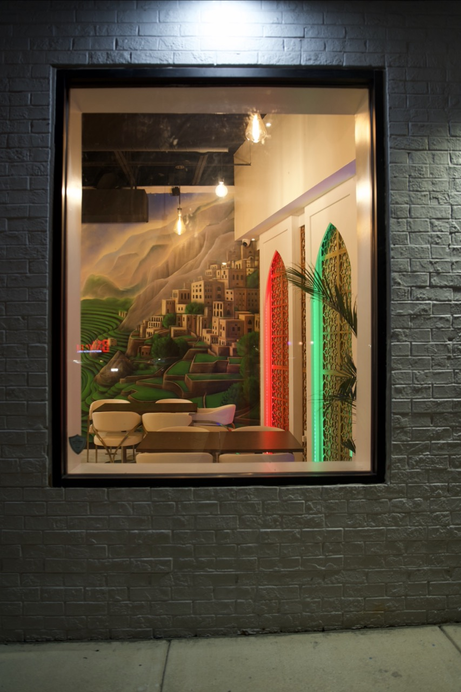

Coffee Was Born in Yemen
And we brought it to Falls Church.

From the Highlands of Yemen
Centuries ago, in the misted terraces of the Yemeni highlands, coffee was first cultivated and brewed. From the legendary port of Mokha, Yemeni beans sailed across the world — yet the truest cup still comes from where it began.
Qahwah Drip is our love letter to that homeland: the mountains of Haraz, the courtyards of Sana'a, and the unhurried ritual of sharing a cup.

The Ritual of Qahwah
Qahwah is more than coffee — it is welcome. Poured from the dallah into small cups, brewed with cardamom, ginger and the patience the tradition deserves.
From qishr made with coffee husks to a slow Sanani pour, every cup is served the way it has been for generations — to be lingered over, in good company.
“From the highlands of Yemen to your cup.”

Touches of Home
Look around and you'll find Yemen in the details — clay models of Old Sana'a's gingerbread tower-houses, brass dallahs, marble and gold arabesque, and murals of the green terraced highlands.
Every corner is built to feel like a sitting room back home.

A Sana'a Sitting Room
Marble and brass arabesque, hand-carved mashrabiya arches, walnut tables and warm lamplight — our Falls Church home is designed to feel like a sitting room in old Sana'a, reimagined for today.
Come for the coffee; stay for the calm.
Our Promise
Traditional Recipes
Qahwah, qishr and Adeni chai made the time-honored way.
Warm Hospitality
Every guest welcomed like family — that is the Yemeni way.